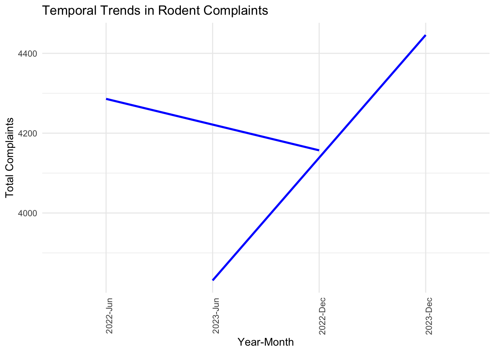
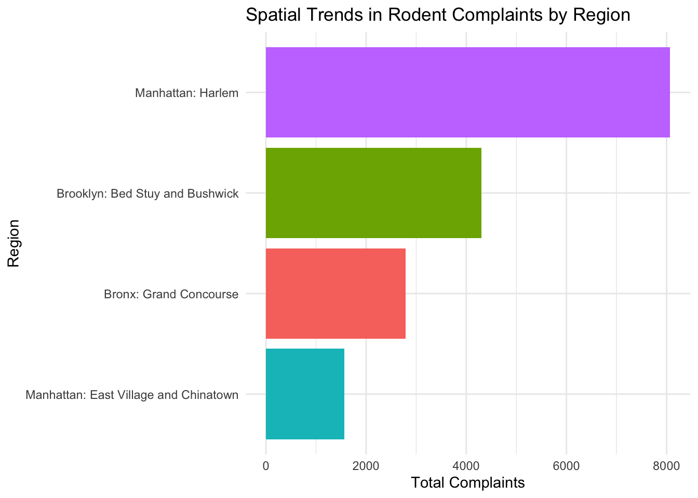
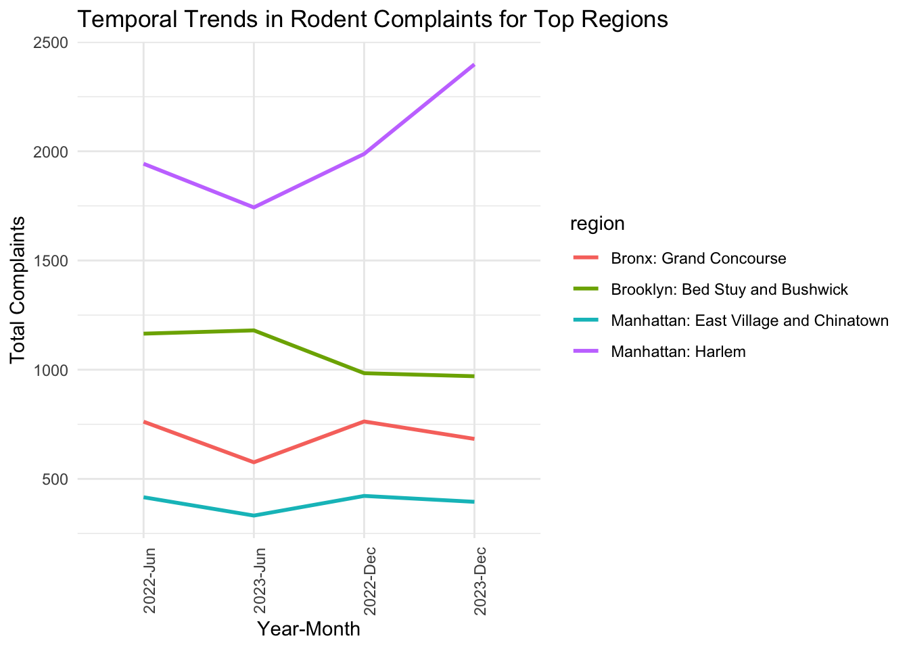

By visualizing the trend of rodent complaints over time, we can see that there was a slight decline in complaints between June 2022 and December 2022. However, complaints increased significantly in June 2023 and continued to rise through December 2023. Seasonal factors may play a role, as rodent activity tends to increase during warmer months when food and shelter are more accessible.
library(dplyr)
library(ggplot2)
library(lubridate)
# Load cleaned data
complaints_clean <- read.csv("cleaned_311_complaints.csv")
# Convert `date` to Date type
complaints_clean <- complaints_clean %>%
mutate(date = as.Date(date))
# Extract temporal features (Year and Month)
complaints_clean <- complaints_clean %>%
mutate(
year = year(date),
month = month(date, label = TRUE)
)
# Temporal Trends Analysis
temporal_trend <- complaints_clean %>%
group_by(year, month) %>%
summarise(total_complaints = sum(count, na.rm = TRUE)) %>%
arrange(year, month)# Plot temporal trends
ggplot(temporal_trend, aes(x = interaction(year, month, sep = "-"), y = total_complaints, group = year)) +
geom_line(color = "blue", linewidth = 1) +
labs(
title = "Temporal Trends in Rodent Complaints",
x = "Year-Month",
y = "Total Complaints"
) +
theme_minimal() +
theme(axis.text.x = element_text(angle = 90, hjust = 1))
The bar chart below displays the total number of complaints for each region during the analyzed period. Harlem reported the highest number of complaints, significantly outpacing other regions.Brooklyn: Bed Stuy and Bushwick followed as the second-most affected area, while Bronx: Grand Concourse and Manhattan: East Village and Chinatown had comparatively lower complaint numbers. Differences in population density, housing conditions, or sanitation infrastructure could explain these regional disparities. Harlem’s high number of complaints might be due to a combination of older infrastructure and higher residential density. Targeted interventions should prioritize Harlem and Bed Stuy/Bushwick. Outreach campaigns and enhanced sanitation efforts in these neighborhoods could significantly reduce complaint volumes.
# Spatial Trends Analysis
spatial_trend <- complaints_clean %>%
group_by(region) %>%
summarise(total_complaints = sum(count, na.rm = TRUE)) %>%
arrange(desc(total_complaints))# Plot spatial trends
ggplot(spatial_trend, aes(x = reorder(region, total_complaints), y = total_complaints, fill = region)) +
geom_bar(stat = "identity") +
coord_flip() +
labs(
title = "Spatial Trends in Rodent Complaints by Region",
x = "Region",
y = "Total Complaints"
) +
theme_minimal() +
theme(legend.position = "none")
The line chart below tracks complaint trends over time for the top regions with the highest complaint counts. Manhattan: Harlem consistently had the highest number of complaints, with a steady increase from June 2022 to December 2023. Brooklyn: Bed Stuy and Bushwick showed a slight decline over the same period, indicating possible effectiveness of recent interventions. Bronx: Grand Concourse and Manhattan: East Village and Chinatown experienced minor fluctuations without significant trends. Harlem’s rising complaints may indicate a persistent rodent issue that hasn’t been fully addressed, while the slight decline in Brooklyn complaints could reflect improvements in sanitation or extermination efforts. The improvement of Brooklyn could serve as a model for replication in other regions.
# Temporal Trends by Region
temporal_spatial_trend <- complaints_clean %>%
group_by(region, year, month) %>%
summarise(total_complaints = sum(count, na.rm = TRUE), .groups = "drop") %>%
arrange(region, year, month)
# Filter for top regions
top_regions <- spatial_trend %>%
top_n(5, total_complaints) %>%
pull(region)
temporal_spatial_filtered <- temporal_spatial_trend %>%
filter(region %in% top_regions)# Plot temporal trends for top regions
ggplot(temporal_spatial_filtered, aes(x = interaction(year, month, sep = "-"), y = total_complaints, color = region, group = region)) +
geom_line(linewidth = 1) +
labs(
title = "Temporal Trends in Rodent Complaints for Top Regions",
x = "Year-Month",
y = "Total Complaints"
) +
theme_minimal() +
theme(axis.text.x = element_text(angle = 90, hjust = 1))